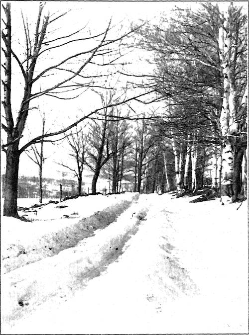

Form And Spirit
Description
This section is from the book "The Natural Style In Landscape Gardening", by Frank A. Waugh. Also available from Amazon: The Natural Style in Landscape Gardening.
Form And Spirit
OUR definition of the natural style of landscape gardening recognizes both form and spirit. We have said that it is a method of landscape gardening in which the natural forms of landscape are used and imbued with the spirit of the native landscape. It ought to be perfectly clear that both form and spirit are everywhere requisite. It is altogether possible to separate the two; but the form without the spirit is a mere corpse, empty and disappointing, while the spirit disembodied is a mere ghost—the dream of some artist's imagination—perhaps a dream which the artist is too lazy or too untrained to realize in physical form.
It ought to be obvious further, as a sort of art axiom, that there should always be a close correspondence between form and spirit. Certain forms are best adapted to express certain ideas or emotions. In architecture the church form, with its gothic windows and its towering spire, expresses a religious thought; the business block, with its wide doors and its show windows, expresses a commercial idea; the state capitol, with its columned porches and its rounded dome, expresses a civic feeling. So in landscape architecture, the big formal garden carries the spirit of the courtly life which once filled Schoenbrunn and Versailles; the snug, walled English garden expresses the feeling of the home-loving, garden-loving English countryman; the bold "front yard" of the American suburbs, set out with one blue spruce and one weeping mountain ash, expresses the crude taste, the ostentation, the desire for public show, of the bourgeois suburbanite.
But let us first consider form. It has been said, though hastily and untruthfully, that the natural landscape has no form and no composition. The fact is that it has very definite forms, very distinct and clear-cut types and very rigid principles of composition.
These are founded on the most fundamental principles of physics,—such simple principles, for example, as that water runs down hill and that trees grow straight up. According to the former principle it is determined that all lakes shall be in depressed areas and that all rivers shall occupy the valleys instead of the hilltops. This obvious rule is in fact some times violated in so-called landscape gardening. Numerous examples might be men-' tioned of ambitious park makers who have put lakes at the tops of hills in order that the river might come dashing down the cheap artificial slope, though the whole intelligence instantly revolts, knowing that no river, or brook even, could ever occupy such a position.
Other important principles of natural landscape composition that may be mentioned in illustration are these: That hills and mountains are always wider at their bases than at their tops; that mountains tend to stand in ranks or ranges; that prairies are nearly always flat; that slow rivers have wide valleys, while swift water runs in narrow valleys; that trees and all other vegetation are larger and denser in the valleys, shrinking in size and importance as we rise in altitude.
So we might go on with a very considerable inventory of principles, every one of which exercises a quite decided influence upon the forms of native landscape. It will answer the present purpose, however, to point out that these are the simple principles of physics as expressed in geology and physical geography. In order, therefore, to understand the unit forms of natural landscape we must know something of geology and of physical geography. One then grasps the landscape result along with the geologic cause. It is plain that the Berkshire Hills must have rounded tops because they were ground down by the glaciers, while the Rocky Mountains will have acute tops because they are recently broken up by volcanic action and have never been eroded at the peaks. It is plain that the sand dunes of Lake Michigan and New Jersey must lie in billows; that great areas of the lower Mississippi Valley must be in swamps; and that the west slope of the Cascade range will support a very different flora from the dry east slope.
These great geologic forces are then the determining factors in the formation of all the great natural types of landscape as enumerated in Chapter II. These landscape types are in fact so many natural landscape forms. We should further notice especially that each of these forms has its own spirit. It is almost impossible to speak of the mountains without thinking of the spirit of the mountains as well as of their physical form. Dr. Wilhelm Miller has recently published a notable treatise on "The Prairie Spirit in Landscape Gardening," which deals, as a matter of course, with both the physical prairie and the spirit of the plains.
IN THE BERKSHIRE HILLS.
Photograph by R. E. SchouUr.
While topography, the main element of the natural landscape, is determined chiefly by geologic factors, vegetation, the element of second importance, is determined largely by present climatic conditions and is to be understood therefore by reference to the teachings of physical geography. At this time I do not wish to enter into any lengthy discussion of these geologic and geographic data, but merely to make it clear that the natural landscape does present perfectly definite and recognizable forms determined by perfectly simple and well-known forces. The question of vegetation, however, and its relation to landscape forms deserve some further consideration.
In practical landscape gardening the development of the natural style has always been deeply involved with questions of planting—with the choice and management of species. Indeed, these ideas have comprised the whole sum and substance, the beginning and the end, the body and the meaning, of the natural style in many minds.
Unquestionably the selection and management of the plant materials does play a major role in practical landscape gardening, and especially in the natural style. The fact that topography, at least in its main features, is beyond the reach of the landscape maker leaves him under the necessity of falling back to what is in reality this secondary position. But since it is necessary, no matter what the reasons, to produce our principal results through our plantings, it becomes doubly necessary to study this part of our work with the utmost care.
Continue to: